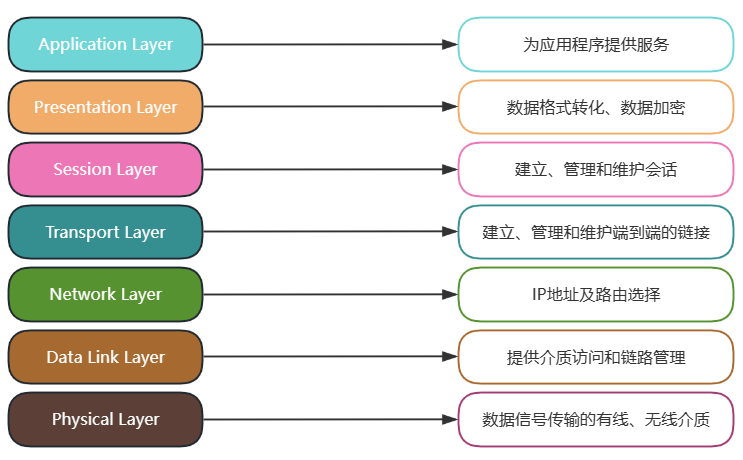
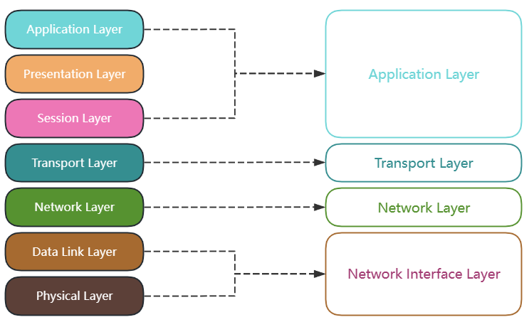
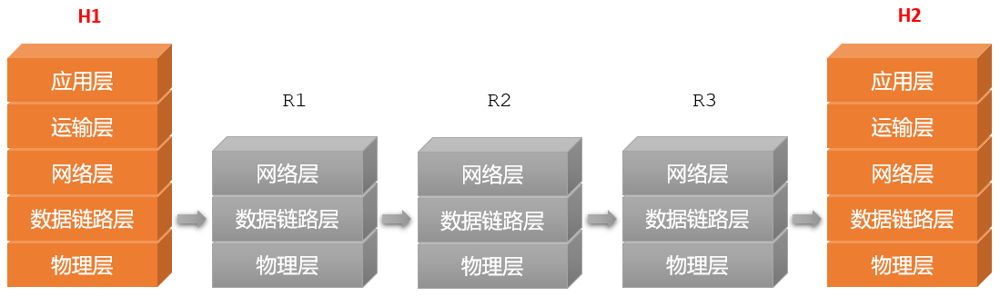
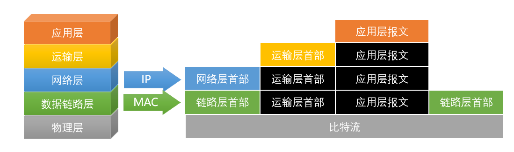

体系结构
Architect
- 概述
- . 计算机网络体系结构是指计算机网络层次结构模型和各层协议的集合；也称为协议集或 协议栈
- . 计算机网络采用 层次化 设计方法，把通信过程划分为多个层次，并为每个层次设计一个单独的协议，这些协议通过分层结构进行组织
- . 每层通过特定的协议完成一种功能；多层叠加完成整个信息的发送和接收过程
- . 最著名的网络体系结构是OSI参考模型和TCP/IP协议
- 分层原则
-
各层之间是相互独立的每一层需要有足够的灵活性各层之间完全解耦
- 分层优点
-
高层不需要知道低层是如何实现的，只需要知道低层所提供的服务，以及本层向上提供的服务，各层独立性强当任何一层发生变化时，只要层间接口不发生变化，那么这种变化就不会影响到其他的层，适应性强整个系统分解为若干易于处理的部分，这种结构使得一个庞大而又复杂的系统实现和维护起来更容易每层的功能与所提供的服务都有精确的定义和说明，有利于促进标准化
OSI参考模型
- . 开放式系统互联参考模型 - Open System Interconnection Reference Model，OSI Model
- . 开放：是指遵循OSI标准的任何系统之间均可通信
- . 系统：是指各系统中与互联有关的部分
- . 这一标准定义了网络互联的7层框架
- . ISO开放系统互联模型实现了系统间的互联性、互操作性和可移植性
- all people seem to need data photo
-
 OSI参考模型 - 物理层 Physical Layer
- 协议数据单元PDU：比特 bit
- 连接不同的物理设备，为上层协议提供了一个传输数据的可靠的物理媒体
- 主要内容：电路接口|机械特性、功能特性|引脚的高低电平、规程特性|事件的发生顺序、电气特性|传输信号的意义，如二进制定义
- 主要设备：中继器 Repeater、集线器 Hub
- 信道的基本概念：信道是往一个方向传输信息的媒体，一条通信电路包含一个发送信道和一个接受信道
-
单工通信信道 Single complex：只能一个方向通信，没有反方向反馈的信道半双工通信信道 Half- complex：双方都可以发送和接受信息，但不能同时发送也不能同时接收全双工通信信道 Full- complex：双方都可以同时发送和接收
- 数据链路层 Data Link Layer
- 协议数据单元PDU：帧 Frame
- 在物理层提供的服务的基础上向网络层提供服务：将源自网络层的数据可靠地传输到相邻节点的目标机网络层。在不可靠的物理介质上提供可靠的传输
- 主要功能：封装成帧、透明传输、差错控制、流量控制、传输管理
- 经典协议：PPP协议
- 主要设备：交换机 Switch、网桥 Bridge
- 网络层 Network Layer
- 协议数据单元PDU：数据包 Packet
- 实现两个端系统之间的数据透明传送，包括寻址和路由选择、连接的建立、保持和终止等
- 采用储存转发方式
- 主要功能：路由选择、规划IP地址、流量控制、差错控制、拥塞控制
- 经典协议：IP、ICMP、IGMP、ARP
- 主要设备：路由器 Router
- 传输层 Transport Layer
- 协议数据单元PDU：用户数据报 UDP和报文段TCP
- 端到端，即主机到主机的层次
- 传输层负责将上层数据分段并提供端到端的、可靠的或不可靠的传输。此外，传输层还要处理端到端的差错控制和流量控制问题
- 网络层只是根据网络地址将源结点发出的数据包传送到目的结点，而传输层则负责将数据可靠地传送到相应的端口
- 主要功能：流量控制、差错控制
- 经典协议：TCP、UDP
- 主要设备：网关 Gateway
- 会话层 Session Layer
- 主要功能：利用传输层端到端的服务，来在网络设备之间建立连接并有序地传输数据。并建立同步信息
- 表示层 Representation Layer
- 主要功能：定义数据的编码格式、是否进行数据压缩、加密/解密等操作
- 应用层 Application Layer
- 主要功能：定义数据的编码格式、是否进行数据压缩、加密/解密等操作
- 设计缺陷
-
过于理想化，无法实现先于网络产生，不符合网络实际发展每一层之间划分过于绝对，复杂，过度追求完美
-
PDU - Protocol Data Unit协议数据单元：每层协议规定的数据传输单位
TCP/IP4层模型
- 1. 标准模型
- 2. 对等模型
-
 TCP/IP4层模型 - 标准模型  数据流 - 对等模型  数据打包 -
各层协议 应用层 HTTP/HTTPS SMTP FTP DNS RIP POP3 SNMP Telnet 传输层 TCP UDP 网络层 IGMP ICMP IP ARP 链路层 PPP Ethernet 物理层 ... - 应用层 Application Layer
- Telnet - 远程登陆；基于TCP
- HTTP - Hypertext Transfer Protocol，超文本传输协议；基于TCP
- HTTPS - Hypertext Transfer Protocol Secure，安全的超文本传输协议；基于TCP
- FTP - File Transfer Protocol，文件传输协议；基于TCP
- SMTP - Simple Mail Transfer Protocol，简单邮件传输协议，一种用于发送电子邮件的协议。它定义了电子邮件的传输方式，负责将邮件从发件人的电子邮件服务器发送到接收人的电子邮件服务器。SMTP负责处理邮件的路由和传输，确保邮件能够准确地传递到目标服务器 ；基于TCP
- POP3 - Post Office Protocol 3，用于接收电子邮件的协议。它允许用户从邮件服务器上下载和接收邮件，如Outlook；基于TCP
- DNS - Domain Name System，域名系统
- DHCP - Dynamic Host Configuration Protocol，动态主机分配协议
- SNMP - Simple Network Management Protocol，简单网络管理协议；一种用于网络管理的应用层协议。它允许网络管理员监视和管理网络设备、服务器、路由器和其他网络设备的运行状态和性能；基于UDP协议
- RIP - Routing Information Protocol，路由信息协议，主要的路由协议之一；基于UDP协议
- 传输层 Transport Layer
- TCP - Transmission Control Protocol，传输控制协议；面向连接，可靠
- UDP - User Datagram Protocol，用户数据报协议；无连接、最大努力交付；直播流
- 两者都具备流量控制和拥塞控制
- 网络层 Network Layer
- IP - Internet Protocol，互联网协议
- ARP - Address Resolution Protocol，地址解析协议
- RARP - Reverse Address Resolution Protocol，逆地址解析协议
- ICMP - Internet Control Message Protocol，Internet控制报文协议
- IGMP - Internet Group Management Protocol，Internet组管理协议
- OSPF - Open Shortest Path First，开放的最短路径优先协议，基于IP协议，主要的路由协议之一
-
网络协议关系ARP协议为IP协议提供服务，IP协议为ICMP协议提供服务，ICMP协议为IGMP协议提供服务。
- 物理层 Physical Layer